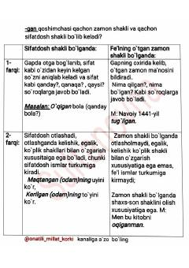

GS-gan qo'shimchasining sifatdosh va zamon shakli sifatidagi farqlari haqida qisqacha qo'llanma.
Ushbu qo'llanma o'zbek tilidagi -gan qo'shimchasining sifatdosh va o'tgan zamon fe'li sifatidagi farqlarini tushuntiradi. Unda har bir shaklning gapdagi vazifasi, so'roqlari va grammatik xususiyatlari misollar bilan keltirilgan.